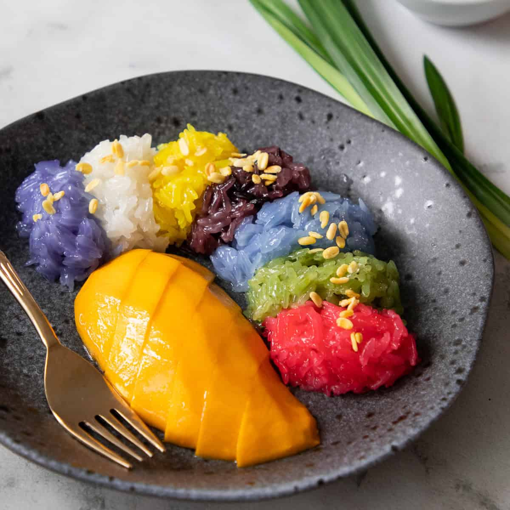

Mango Sticky Rice Recipe

Description
Mango sticky rice is a traditional Southeast Asian and South Asian dessert made with glutinous rice, fresh mango and coconut milk, and eaten with a spoon or the hands.
Ingredients
Coconut Sticky Rice
- 1 cup white glutinous rice
- ⅔ cup coconut milk
- ½ teaspoon table salt
- ½ cup sugar
Salted Coconut Sauce
- ½ cup coconut milk
- ¼ teaspoon table salt
- 1 teaspoon rice flour
- 1 Tablespoon water
Steps
- Wash the glutinous rice about 4-5 times until the water runs mostly clear. Then soak the rice in plenty of room temp water for at least 4 hours and up to overnight.
- If you want to colour the rice, you can add the colour to the soaking water
- Drain the rice very well and place it on a moist (not wet!) muslin or tea towel, then fold the edges of the cloth over the rice. You can steam different colours at once, as long as they don't touch.
- Steam the rice for 20-25 minutes over boiling water. Make sure the rice doesn't cover the entire rack - there should be space around the rice to allow the steam to come up.
- Prepare the coconut syrup. In a pot, combine the coconut milk, sugar, salt; and if you have a pandan leaf handy you can throw it in as well. Cook it over medium high heat, and at the first sign of bubbling, turn off the heat and keep covered until the rice is done. Do not let this syrup reduce.
- Macerate the rice. Shortly before the sticky rice is done, reheat the syrup back up so it is piping hot. When the rice is done, immediately place it into a mixing bowl and pour the hot syrup over the rice. Stir to break up any lumps, then cover with a lid, a plate, or aluminum foil and let sit for 20 minutes. It's very important both the rice AND the syrup are very hot to ensure proper absorption.
- After 20 minutes, fold the bottom of the rice up to the top to help redistribute the liquid, and let sit for at least another 20 minutes or until ready to serve.
- The rice should've absorbed all the liquid and looks plump and shiny, but not mushy. There should be no pooling liquid remaining.
- Stir the rice flour in some water until there are no more lumps.
- Combine the rice flour slurry, coconut milk, and salt in a small pot. Cook over medium high heat, stirring constantly, until the mixture comes to a boil.
- Pour into a bowl and let cool. It will not look like much has happened at this point.
- After it has cooled it'll thicken to the perfect consistency. This will keep for up to a week in the fridge.
- Scoop the rice onto a plate, then drizzle the salted coconut sauce over the rice.